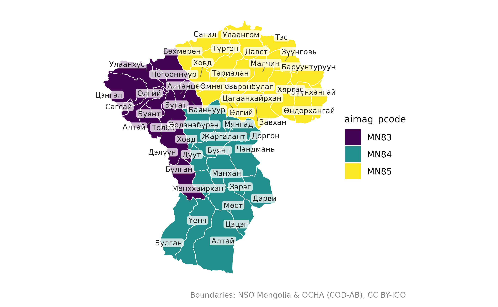
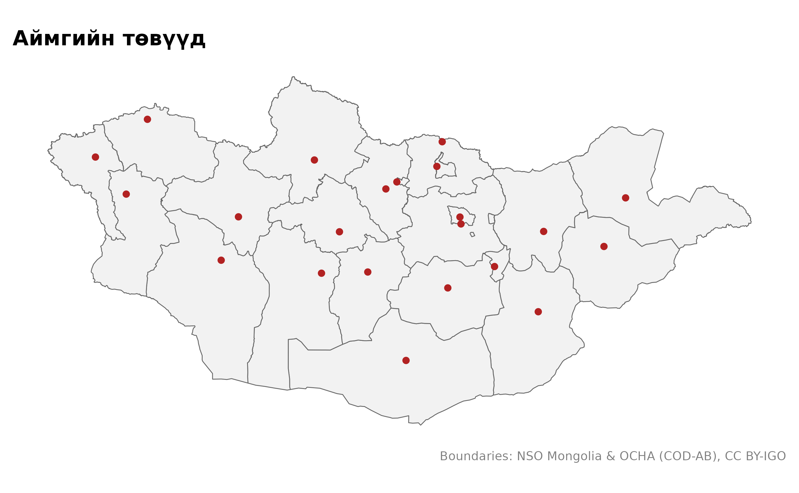
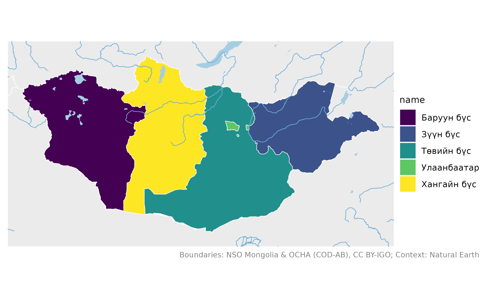
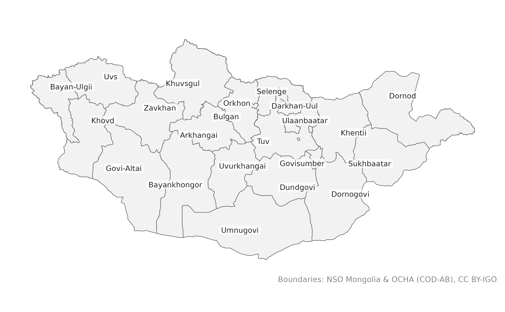

mongolmaps нь Монгол Улсын бэлэн газрын зургийг R програмд өгдөг. Энэ нийтлэлийн бүх жишээ интернетгүй ажиллана: хялбаршуулсан хил хязгаар багц дотроо байдаг.
library(mongolmaps)
options(mongolmaps.lang = "mn") # нэрийг монголоорЗасаг захиргааны түвшин
Монгол Улс 21 аймаг, нийслэл Улаанбаатартай. Аймаг сумдад, сум багт хуваагдана. Улаанбаатар 9 дүүрэгт, дүүрэг хороонд хуваагдана.
| mongolmaps дахь түвшин | Орон нутаг | Улаанбаатар |
|---|---|---|
"country" |
Монгол Улс | |
"region" |
эдийн засгийн 4 бүс | Улаанбаатар 5 дахь бүс |
"aimag" |
21 аймаг | Улаанбаатар |
"soum" |
330 сум | 9 дүүрэг |
"bag" |
~1,650 баг | 204 хороо |
Түвшин бүр өөрийн функцтэй:
mn_aimags()
#> Simple feature collection with 22 features and 15 fields
#> Geometry type: MULTIPOLYGON
#> Dimension: XY
#> Bounding box: xmin: 87.7345 ymin: 41.58183 xmax: 119.9315 ymax: 52.14835
#> Geodetic CRS: WGS 84
#> # A tibble: 22 × 16
#> pcode name name_en name_mn name_mns level type number iso_code nso_code
#> <chr> <chr> <chr> <chr> <chr> <chr> <chr> <int> <chr> <chr>
#> 1 MN11 Улаанбаа… Ulaanb… Улаанб… Ulaanba… aimag capi… NA MN-1 511
#> 2 MN21 Дорнод Dornod Дорнод Dornod aimag aimag NA MN-061 421
#> 3 MN22 Сүхбаатар Sukhba… Сүхбаа… Sükhbaa… aimag aimag NA MN-051 422
#> 4 MN23 Хэнтий Khentii Хэнтий Khentii aimag aimag NA MN-039 423
#> 5 MN41 Төв Tuv Төв Töv aimag aimag NA MN-047 341
#> 6 MN42 Говьсүмб… Govisu… Говьсү… Govisüm… aimag aimag NA MN-064 342
#> 7 MN43 Сэлэнгэ Selenge Сэлэнгэ Selenge aimag aimag NA MN-049 343
#> 8 MN44 Дорноговь Dornog… Дорног… Dornogo… aimag aimag NA MN-063 344
#> 9 MN45 Дархан-У… Darkha… Дархан… Darkhan… aimag aimag NA MN-037 345
#> 10 MN46 Өмнөговь Umnugo… Өмнөго… Ömnögovi aimag aimag NA MN-053 346
#> # ℹ 12 more rows
#> # ℹ 6 more variables: parent_pcode <chr>, region_pcode <chr>,
#> # aimag_pcode <chr>, soum_pcode <chr>, area_km2 <dbl>,
#> # geometry <MULTIPOLYGON [°]>Бүгд ижил баганатай:
-
pcode: аль ч түвшинд нэгжийг ялгах код; -
name,name_en,name_mn,name_mns: сонгосон хэл дээрх нэр, англи нэр (ҮСХ-ны бичлэгээр), кирил нэр, латин үсгээр (MNS 5217); -
level,type,number: нэгжийн төрөл; -
iso_code,nso_code: ISO 3166-2 болон ҮСХ-ны код; -
parent_pcode,region_pcode,aimag_pcode,soum_pcode: харьяалах нэгжүүд; -
area_km2талбай,geometryхил.
Шүүх
Хэрэгтэй газраа нэрээр нь өгнө. Нэрийг ямар ч түгээмэл бичлэгээр бичиж болно.
mn_soums(aimag = "Ховд")
#> Simple feature collection with 17 features and 15 fields
#> Geometry type: MULTIPOLYGON
#> Dimension: XY
#> Bounding box: xmin: 90.65037 ymin: 44.99983 xmax: 94.30692 ymax: 48.96636
#> Geodetic CRS: WGS 84
#> # A tibble: 17 × 16
#> pcode name name_en name_mn name_mns level type number iso_code nso_code
#> <chr> <chr> <chr> <chr> <chr> <chr> <chr> <int> <chr> <chr>
#> 1 MN8401 Жаргала… Jargal… Жаргал… Jargala… soum soum NA NA 18401
#> 2 MN8404 Алтай Altai Алтай Altai soum soum NA NA 18404
#> 3 MN8407 Булган Bulgan Булган Bulgan soum soum NA NA 18407
#> 4 MN8410 Буянт Buyant Буянт Buyant soum soum NA NA 18410
#> 5 MN8413 Дарви Darvi Дарви Darvi soum soum NA NA 18413
#> 6 MN8416 Дөргөн Durgun Дөргөн Dörgön soum soum NA NA 18416
#> 7 MN8419 Дуут Duut Дуут Duut soum soum NA NA 18419
#> 8 MN8422 Зэрэг Zereg Зэрэг Zereg soum soum NA NA 18422
#> 9 MN8425 Манхан Mankhan Манхан Mankhan soum soum NA NA 18425
#> 10 MN8428 Мөнххай… Munkhk… Мөнхха… Mönkhkh… soum soum NA NA 18428
#> 11 MN8431 Мөст Must Мөст Möst soum soum NA NA 18431
#> 12 MN8434 Мянгад Myangad Мянгад Myangad soum soum NA NA 18434
#> 13 MN8437 Үенч Uyench Үенч Üyench soum soum NA NA 18437
#> 14 MN8440 Ховд Khovd Ховд Khovd soum soum NA NA 18440
#> 15 MN8443 Цэцэг Tsetseg Цэцэг Tsetseg soum soum NA NA 18443
#> 16 MN8446 Чандмань Chandm… Чандма… Chandma… soum soum NA NA 18446
#> 17 MN8449 Эрдэнэб… Erdene… Эрдэнэ… Erdeneb… soum soum NA NA 18449
#> # ℹ 6 more variables: parent_pcode <chr>, region_pcode <chr>,
#> # aimag_pcode <chr>, soum_pcode <chr>, area_km2 <dbl>,
#> # geometry <MULTIPOLYGON [°]>
mn_aimags(region = "Баруун бүс")
#> Simple feature collection with 5 features and 15 fields
#> Geometry type: MULTIPOLYGON
#> Dimension: XY
#> Bounding box: xmin: 87.7345 ymin: 42.69975 xmax: 99.20735 ymax: 50.88443
#> Geodetic CRS: WGS 84
#> # A tibble: 5 × 16
#> pcode name name_en name_mn name_mns level type number iso_code nso_code
#> <chr> <chr> <chr> <chr> <chr> <chr> <chr> <int> <chr> <chr>
#> 1 MN81 Завхан Zavkhan Завхан Zavkhan aimag aimag NA MN-057 181
#> 2 MN82 Говь-Алтай Govi-A… Говь-А… Govi-Al… aimag aimag NA MN-065 182
#> 3 MN83 Баян-Өлгий Bayan-… Баян-Ө… Bayan-Ö… aimag aimag NA MN-071 183
#> 4 MN84 Ховд Khovd Ховд Khovd aimag aimag NA MN-043 184
#> 5 MN85 Увс Uvs Увс Uvs aimag aimag NA MN-046 185
#> # ℹ 6 more variables: parent_pcode <chr>, region_pcode <chr>,
#> # aimag_pcode <chr>, soum_pcode <chr>, area_km2 <dbl>,
#> # geometry <MULTIPOLYGON [°]>Газрын зураг зурах
mn_map() эдгээрийг ggplot2-оор зурна.

Энгийн ggplot буцаадаг тул дээр нь давхарга нэмж болно:
library(ggplot2)
mn_map(mn_aimags()) +
geom_sf(data = mn_settlements(type = c("capital", "aimag_centre")), colour = "firebrick") +
labs(title = "Аймгийн төвүүд")
context = TRUE бол хөрш орнууд, гол мөрөн, нуурыг нэмж
зурна:
mn_map(mn_regions(), fill = name, context = TRUE)
Проекц
Хил хязгаар уртраг, өргөрөгөөр (EPSG:4326) ирдэг.
mn_map() өөрөө проекцлоно; өөрөө проекцлох бол
crs-ийг ашиглана:
mn_aimags(crs = "albers")
#> Simple feature collection with 22 features and 15 fields
#> Geometry type: MULTIPOLYGON
#> Dimension: XY
#> Bounding box: xmin: -1182877 ymin: -601751.4 xmax: 1207275 ymax: 584211.5
#> Projected CRS: +proj=aea +lat_0=47 +lon_0=104 +lat_1=43.5 +lat_2=50.5 +x_0=0 +y_0=0 +datum=WGS84 +units=m +no_defs
#> # A tibble: 22 × 16
#> pcode name name_en name_mn name_mns level type number iso_code nso_code
#> * <chr> <chr> <chr> <chr> <chr> <chr> <chr> <int> <chr> <chr>
#> 1 MN11 Улаанбаа… Ulaanb… Улаанб… Ulaanba… aimag capi… NA MN-1 511
#> 2 MN21 Дорнод Dornod Дорнод Dornod aimag aimag NA MN-061 421
#> 3 MN22 Сүхбаатар Sukhba… Сүхбаа… Sükhbaa… aimag aimag NA MN-051 422
#> 4 MN23 Хэнтий Khentii Хэнтий Khentii aimag aimag NA MN-039 423
#> 5 MN41 Төв Tuv Төв Töv aimag aimag NA MN-047 341
#> 6 MN42 Говьсүмб… Govisu… Говьсү… Govisüm… aimag aimag NA MN-064 342
#> 7 MN43 Сэлэнгэ Selenge Сэлэнгэ Selenge aimag aimag NA MN-049 343
#> 8 MN44 Дорноговь Dornog… Дорног… Dornogo… aimag aimag NA MN-063 344
#> 9 MN45 Дархан-У… Darkha… Дархан… Darkhan… aimag aimag NA MN-037 345
#> 10 MN46 Өмнөговь Umnugo… Өмнөго… Ömnögovi aimag aimag NA MN-053 346
#> # ℹ 12 more rows
#> # ℹ 6 more variables: parent_pcode <chr>, region_pcode <chr>,
#> # aimag_pcode <chr>, soum_pcode <chr>, area_km2 <dbl>,
#> # geometry <MULTIPOLYGON [m]>mn_crs() проекцуудыг буцаана: улсын хэмжээний зурагт
Альберсийн тэнцүү талбайт проекц, Улаанбаатарт UTM-ийн 48N бүс.
Хэл
Нэрийг англиар харуулах бол lang = "en":

Бүх функцэд нэг дор тохируулах бол
options(mongolmaps.lang = "en") эсвэл
"mn".
Илүү нарийвчлал
Багцтай ирдэг хил хялбаршуулсан. Нарийн ажилд
resolution = "high" ашиглана: бүрэн нарийвчлалтай хилийг
(ойролцоогоор 10 МБ) нэг удаа татаж, хадгална.
mn_soums(aimag = "Ховд", resolution = "high")Өгөгдлийн эх сурвалж
mn_sources()[c("id", "provider", "license")]
#> # A tibble: 16 × 3
#> id provider license
#> <chr> <chr> <chr>
#> 1 admin National Statistics Office of Mongolia; OCHA CC BY-…
#> 2 khoroos khoroo-map (GitHub Tuvshin-Level/khoroo-map) 0BSD
#> 3 codes National Statistics Office of Mongolia Open d…
#> 4 settlements Wikidata CC0 1.0
#> 5 naturalearth Natural Earth Public…
#> 6 admin_high National Statistics Office of Mongolia; OCHA; khoroo-… CC BY-…
#> 7 osm_roads OpenStreetMap contributors (via HOT export) ODbL 1…
#> 8 osm_transport OpenStreetMap contributors (via HOT export) ODbL 1…
#> 9 osm_water OpenStreetMap contributors (via HOT export) ODbL 1…
#> 10 osm_places OpenStreetMap contributors (via HOT export) ODbL 1…
#> 11 elevation_1km Copernicus DEM GLO-90 (DLR; Airbus; ESA; European Uni… Copern…
#> 12 landcover_1km ESA WorldCover project CC BY …
#> 13 copernicus_dem Copernicus DEM GLO-90 (DLR; Airbus; ESA; European Uni… Copern…
#> 14 worldcover ESA WorldCover project CC BY …
#> 15 worldpop WorldPop (University of Southampton) CC BY …
#> 16 wdpa UNEP-WCMC and IUCN (Protected Planet) WDPA t…Эх сурвалжийг дурдана уу; mn_citation() бичвэрийг нь
өгнө.